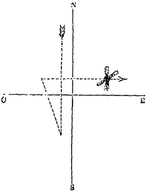

À Winnemucca (Nevada), observation d'un oiseau de très grande taille posé sur le
toit d'une maison "General News", Independent Democrat de Elyria (Ohio), 30 août 1871.
(1er?) A Marseille, M. Coggia observe un bolide pendant 20 mnFlammarion, C.: Etudes et Lecture sur L'Astronomie, Tome 5, 1874, p. 143, p. 159.
Aux USA, on voit des formations d'objets complexes, certains triangulaires,
d'autres ronds, d'autres encore de formes variées ; quelques-uns semblent planer, un sembla en difficulté,
tombant en oscillant d'un côté à l'autre.
Figure 2

À l'occasion d'une session d'observation d'étoiles filantes, M. Chapelas en voit 2 partir
presque simultanément de l'étoile des Gémeaux ; toutes les 2 appartenaient à cette catégorie de météores que
nous désignons sous le nom de nébuleux, moindres que la 6ème grandeur, et circulant dans des régions
fort élevées ; la 1ère, conservant cette taille, venait de s'éteindre près de χ
d'Orion, fournissant une course de 35 °, avec une direction nord-sud bien accentuée. La 2ème marchait d'abord
parallèlement, et arrivée à ce même point, changea subitement de direction, se dirigeant sur l'étoile
δ du Baudrier d'Orion, c'est-à-dire du sud-sud-est au nord-nord-ouest, en augmentant sensiblement
d'éclat ; puis, après un léger temps d'arrêt, reprenant vivement sa course, mais cette fois de
l'ouest à l'est et traversant la constellation de la Licorne, elle vint s'éteindre près de l'étoile δ du
Petit Chien. Dans ce dernier trajet, ce météore, dont la taille augmentait toujours, finit enfin comme une
étoile de 1ère grandeur extrêmement brillante, en crevant comme une ampoule de laquelle s'échappaient 4 petits
jets phosphorescents qui subsistèrent environ 3 mn après la disparition de l'étoile, en suivant également la
direction ouest-est. Ce météore a parcouru 77 °, et indique évidemment une trajectoire inclinée vers le sol et
tourmentée par les diverses influences atmosphériques qu'elle a rencontrésFlammarion, C.: "19 octobre", paragraphe 17 de "Bolides et aérolithes", Etudes et lectures sur l'astronomie, tome 5, 1874, p. 97.